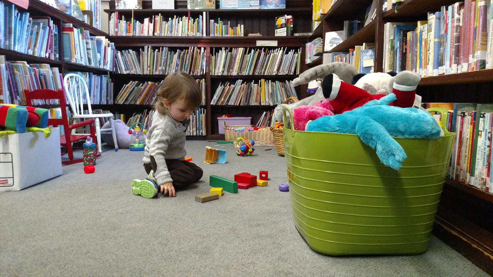

The Everett C. Benton Library
An independent community library
The Friends of the Benton Library will be hosting a Holiday Open House on Saturday, December 5th from 2:00 to 5:00. Please join us.
The Friends of the Benton Library is very grateful to the many volunteers, patrons, supporters, neighbors, and friends who contribute to the success of our organization. We are also grateful to the Town of Belmont, the Belmont Public Library, the Belmont Cultural Council, and the Belmont Savings Bank Foundation for their help and support.
Hours
Mondays 2:00 pm to 5:00 pm
Tuesdays 2:00 pm to 5:30 pm
Wednesdays 11:00 am to 5:30 pm
Thursdays 2:00 pm to 7:30 pm
Fridays 2:00 pm to 5:00 pm
Saturday 2:00 pm to 5:00 pm
The Everett C. Benton Library is located at 75 Oakley Road in Belmont, at the corner of Oakley and old Middlesex Roads. It is an independent library staffed by volunteers and supported by donations. The Friends of the Benton Library is a non-profit organization dedicated to care and preservation of this historic building.
The Benton Library is a lending library with over 7,500 catalogued books including a robust selection of best sellers and mysteries, as well as a wonderful, ever expanding children's and young adult collection. Library cards are free and available to all: you do not need to be a Belmont resident to borrow books. We have computers available for public use and free wi-fi.

The Everett C. Benton Library has been self-sustaining and successful thanks to the many people who are involved in staffing and maintaining the library and to our generous financial supporters. We are grateful to our many individual donors, the Belmont Savings Bank Foundation, and the Belmont Cultural Council. We are also grateful for the help and support from the Town of Belmont and the Belmont Public Library.